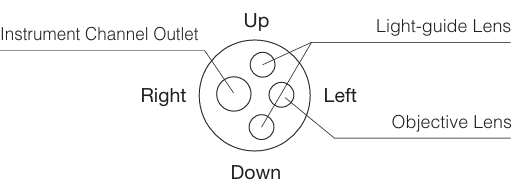
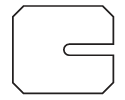
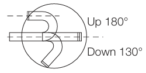

GF-UCT260은 분리 가능한 초음파 케이블을 통해 재처리 및 보관이 용이하며, 재설계된 겸자 승강기가 3.7 mm 치료 채널 기구에 대한 신뢰할 수 있는 제어력을 제공하고, 슬림한 12.5 mm 삽입관이 EUS 유도 FNA(세침 흡인 생검) 시술을 위한 이상적인 시스템을 구축하여 원활한 삽입을 보장하는 내시경 초음파 스코프입니다.
Excellent image
이전 플래그십 모델(BF-6C260)과 견줄만한 고해상도 이미지 품질을 제공합니다.
NBI (Narrow Band Imaging)
점막 표면의 혈관 시각화를 개선하는 광학 이미지 향상 기술입니다. NBI는 이제 CV-260, CLV-260SL, BF-1T260보다 두 배 더 밝아졌습니다.
Insertion tube rotation function
스코프 조작부의 링을 돌려 삽입관을 좌우로 최대 120° 까지 회전할 수 있습니다. 이는 시술자 피로를 줄이고 더 쉬운 조작과 부드러운 삽입을 지원합니다.
Wider Channel Diameter
기구 채널 직경이 3.0mm 로 증가하여, 흡인량을 늘리고 대형 생검 겸자와 같은 다양한 치료 기구 사용 능력을 확장했습니다.
Waterproof one-touch connector
새로운 커넥터 디자인은 설정 노력을 최소화하며, 완전히 잠수 가능하여 방수 캡이 필요 없고 우발적 침수로 인한 고가 수리 위험을 제거합니다.
| Optical System | Field of view | 120° |
|---|---|---|
| Direction of view | Forward viewing | |
| Depth of field | 2-100 mm | |
| Image quality | Q-image | |
| Insertion Tube | Distal end outer diameter | 5.9 mm |
| Distal end enlarged |  | |
| Insertion tube outer diameter | 6.0 mm | |
| Working length | 600 mm | |
| Insertion tube rotation function | Yes | |
| Instrument Channel | Channel inner diameter | 3.0 mm |
| Minimum visible distance | 3.0 mm from the distal end | |
| Direction from which EndoTherapy accessories enter and exit the endoscopic image |  | |
| Bending Section | Angulation range |  |
| Electro-Cautery instrument Compatibility | Yes | |
| Laser Compatibillty | Nd: YAG, 810nm diode | |
| Compatible EVIS LUCERA System |
Video System Center OLYMPUS CV-290 Xenon Light Source OLYMPUS CLV-290SL, CLV-290 |
|